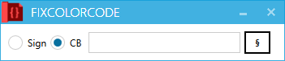

右图则为色彩选择的主要界面。
悬浮在滑块上可以看到具体数值。
点击生成后即可关闭本窗口。
←在物品标签页按下F2，或物品、召唤实体、自定义合成、药水标签页内使用到“§”分节符后，会自动打开此窗口，左侧两个单选纽是用来选择游戏内执行方式的：Sign为在命令方块上方生成告示牌方块，右击告示牌直接执行修复后的指令；CB则为在命令方块上生成告示牌后，点击告示牌来修改命令方块内的指令，再次执行命令方块时才执行修复后的指令。两者皆可在游戏中使用Ctrl+鼠标中键（默认拾取方块键）来获取带有NBT属性的方块，之后在地图任意位置使用。